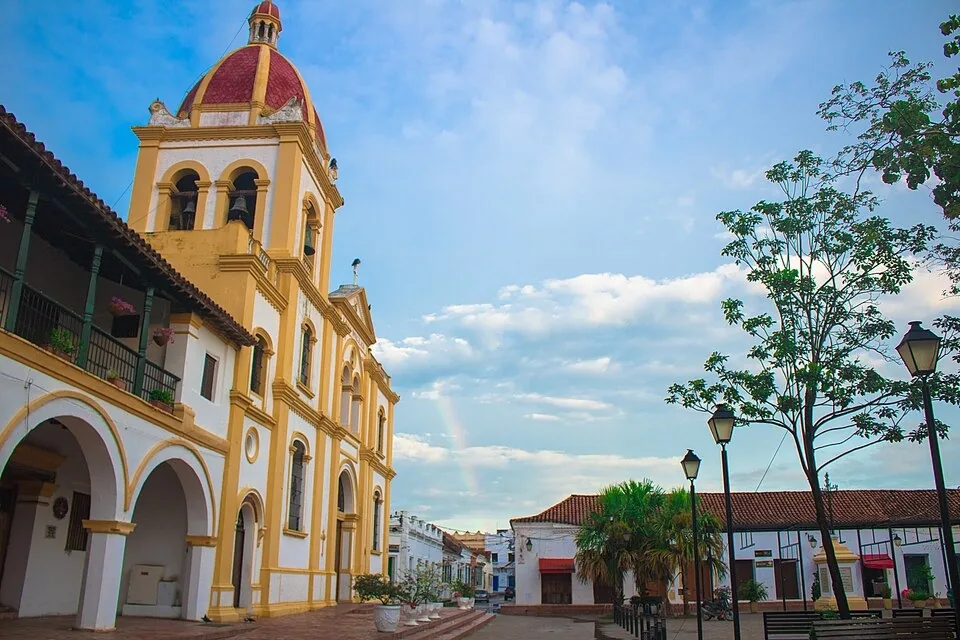
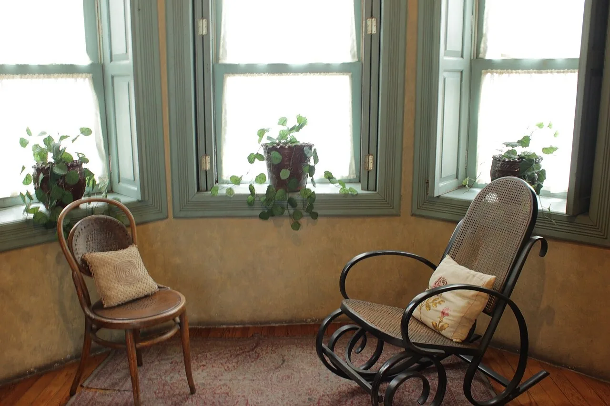

Mecerse permite cambiar de posición sin abandonar un lugar. En la silla momposina, ese movimiento depende de una estructura de madera y de un asiento y respaldo tejidos. Mirarla como un objeto de diseño obliga a reunir lo que la pieza terminada hace parecer inseparable: proporciones, ensambles, tejido y una organización del trabajo.
El reportaje «Sentarse en Mompox», de Mónica Quintero Restrepo, publicado por la Fundación Gabo en 2015, describe talleres que envían piezas a casas cercanas para su tejido. Recoge también una versión oral sobre un posible antecedente italiano. Ese relato no permite fijar un inventor ni una fecha de origen. [1]
El origen incierto deja abierta una pregunta que el objeto permite estudiar mejor: cómo una forma llega a hacerse local. En Mompox importan las adaptaciones de los talleres, la distribución de tareas y el uso prolongado de las piezas. Reconstruir esas relaciones resulta más útil que resolver una atribución sin documentos. La pertenencia puede estar en la continuidad de una práctica, incluso cuando la silueta tiene antecedentes en otros lugares.
La silla organiza una relación próxima con el cuerpo. La altura del asiento, la inclinación del respaldo, la separación de los brazos y la tensión del tejido modifican la postura y el apoyo. La mecedora añade un equilibrio en movimiento: sostenerse exige que esas proporciones trabajen junto a la curva de los balancines. La comodidad empieza en la construcción del conjunto.
El balanceo depende de la geometría de los apoyos y de cómo se distribuye el peso. La curvatura de los balancines y las proporciones de la silla deben permitir una oscilación controlada. El movimiento parece sencillo al usarlo, pero obliga a coordinar decisiones de estructura y postura. Mirar esas relaciones permite discutir la pieza con más precisión que describirla como rústica o tradicional.


El estudio publicado en Iconofacto en 2017 recoge la entrevista del artesano Luis Manuel Méndez Colón y distingue ayudantes, tejedores, torneros y talladores. Registra asimismo distintas tipologías de silla. La diversidad de modelos y tareas sitúa el oficio en una tradición productiva, antes que en la repetición de una pieza única. [2]
Esta distribución del trabajo permite ver algo que el lenguaje comercial suele ocultar. Decimos que una silla está hecha a mano, como si esa expresión identificara una técnica única y una persona responsable de toda la pieza. Pero detrás de esa mano singular suele haber muchas manos. El trabajo del carpintero no es el del tejedor; el conocimiento del tallador no sustituye el del ensamblador. La fabricación artesanal no significa ausencia de organización ni espontaneidad absoluta. Puede implicar especialización, secuencias, acuerdos, herramientas específicas y una economía de producción. El carácter manual no elimina la división del trabajo: la hace visible en las habilidades que cada persona domina y transmite.
La especialización permite entender el aprendizaje como parte de la construcción. Tejer exige reconocer la tensión de la fibra, sostener la regularidad y corregir una desviación antes de que avance. Trabajar la madera requiere anticipar uniones y ajustes. Son capacidades que se adquieren al comprobar el resultado de una operación y corregirla. Conservar la pieza implica conservar oportunidades para aprender esas diferencias.
La bitácora de Artesanías de Colombia de 2018 documenta un desarrollo con el ebanista Rodolfo Felizzola. La intervención propone unificar la apariencia de las maderas y registra una mecedora de cañahuate. Es un caso situado de modificación del producto; no describe todos los talleres ni acredita el estado actual de su producción. [3]
Aquí aparece una de las discusiones centrales del diseño contemporáneo: la diferencia entre conservar una forma y conservar un conocimiento. Una silla podría mantener exactamente su apariencia mientras cambia por completo la manera de producirla. Podría reproducirse mediante moldes industriales, componentes prefabricados y tejidos mecánicos hasta conservar una semejanza exterior con el objeto artesanal. También podría cambiar algunos materiales y dimensiones sin perder la lógica de su construcción manual. La autenticidad, entonces, no puede depender exclusivamente de la apariencia. Hay que preguntarse qué procesos permanecen, qué habilidades se transmiten, quién participa en la fabricación y qué parte del valor generado retorna a quienes sostienen el oficio.


Dimensiones, material y precio describen una parte de la silla. Para reconocer el trabajo que la produce haría falta identificar quién construyó la estructura, quién tejió, qué madera se empleó y cómo puede repararse. Esos datos permiten seguir las operaciones y asignar sus créditos. También dan al comprador una información práctica: a quién recurrir cuando el asiento ceda o una unión necesite ajuste.
La crónica de 2015 da nombre a Neila Alvarado y a su hija Irina Vergara como tejedoras y describe aprendizaje, trabajo por piezas y restauración. Sus testimonios pertenecen a ese reportaje y a esa fecha; no se utilizan aquí para anunciar salarios o condiciones vigentes. [1]
La silla momposina plantea, además, una pregunta sobre la duración. En una cultura acostumbrada a reemplazar objetos con rapidez, la reparación parece una actividad secundaria, cuando en realidad constituye una de las formas más importantes de inteligencia material. Una silla de madera puede lijarse, ajustarse, volver a ensamblarse y recibir un tejido nuevo. Su vida no termina necesariamente cuando se desgasta el asiento o se afloja una unión. El objeto admite una relación prolongada con sus usuarios porque sus componentes pueden intervenirse. Esta posibilidad no debe romantizarse: la reparabilidad depende de la calidad de la construcción, de la disponibilidad de repuestos, del conocimiento del oficio y del costo de la intervención. Pero cuando existe, transforma la relación entre posesión y consumo. La silla deja de ser una cosa que se compra para ser reemplazada y se convierte en un objeto al que se puede regresar.
Una colaboración de diseño podría estudiar la postura, la estabilidad, los acabados y la reparación junto con quienes fabrican la silla. Cada modificación tendría que mostrar qué mejora, qué cambia en el proceso y cuánto trabajo añade. Ajustar una dimensión o ensayar otro material exige escuchar al oficio cuando contradice el dibujo. El resultado se juzgaría tanto en el uso como en las condiciones acordadas para producirlo.
La continuidad de la mecedora depende de que siga habiendo personas capaces de construirla, ajustar sus uniones y volver a tejerla. Una variante puede modificar su apariencia y conservar ese conocimiento; una copia fiel puede prescindir de él. La pregunta de diseño queda en una relación concreta: cómo se conectan quien la fabrica, quien descansa en ella y quien podrá repararla.
Fuentes.
- Mónica Quintero Restrepo — Sentarse en Mompox, 08.12.2015
- Iconofacto 13(20), 2017 — cultura material y silla momposina, pp. 62–63
- Artesanías de Colombia — bitácora 2018, Rodolfo Felizzola
Ensayo documental editado a partir del texto aportado. Las entrevistas citadas fueron realizadas por sus fuentes originales. Sin trabajo de campo propio ni precios actuales.
Fuentes consultadas el 13.11.2026. Interpretación y edición: RUMMOR. Edición de prueba para revisión.